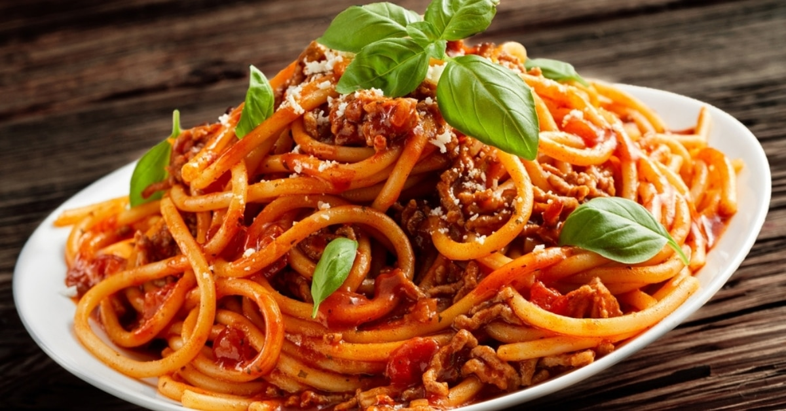

One Pot Spaghetti

Description
One-pot spaghetti puts Italian sausage, pasta sauce, and noodles together for a dish you can have on the table in less than 45 minutes. It doesn't get much easier than this by cooking everything in one pot. Switch it up by using ground beef, chicken, or turkey along with any other of your favorite ingredients, such as sliced mushrooms.
Ingredients
- 1 pound ground Italian sausage
- 1 small white onion, diced
- 4 cloves garlic, minced
Steps
- Combine ground sausage, onions, and garlic in a large pot or skillet with tall sides. Cook over medium heat until sausage is cooked through, 5 to 8 minutes. Drain and discard grease.
- Stir pasta sauce, water, and Italian seasoning into the pot; bring to a boil. Stir in spaghetti noodles, return to a boil, and cook, stirring occasionally, until noodles are cooked through and sauce has thickened, 17 to 20 minutes.
- Serve topped with grated Parmesan cheese.